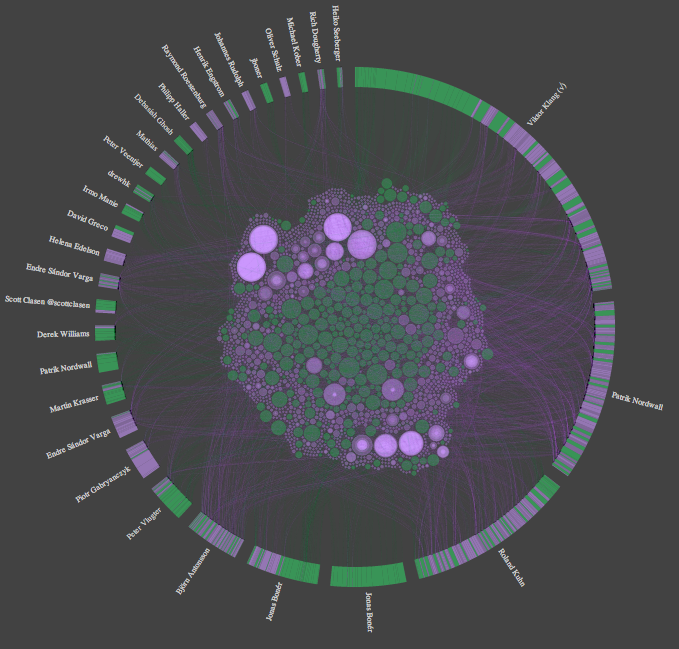
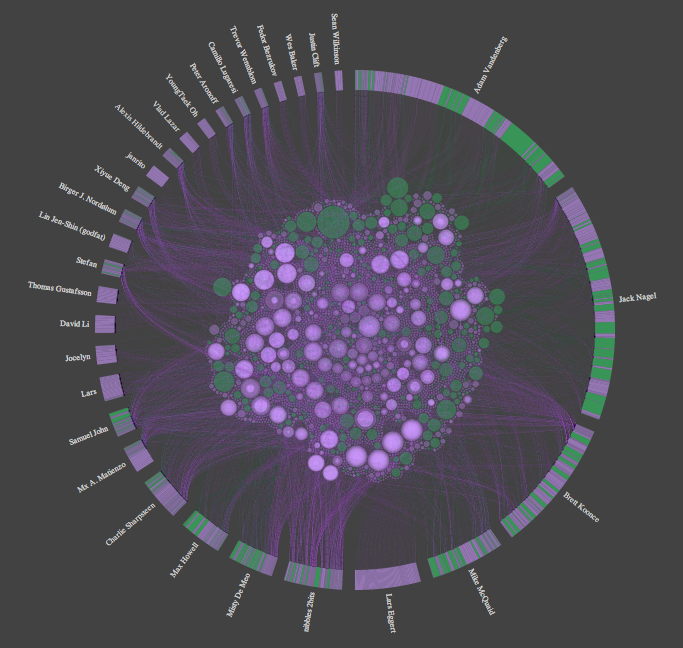
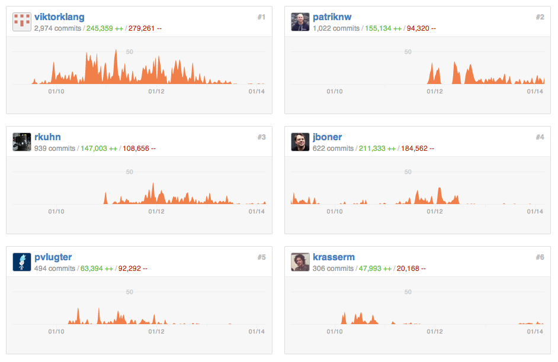
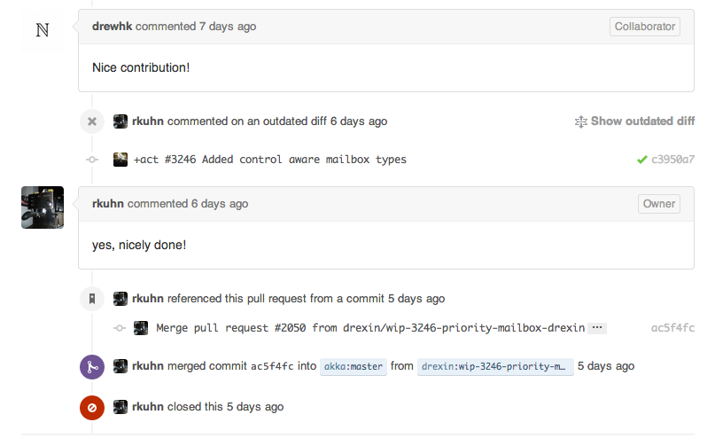

Collaboration in GitHub Projects
Eileen Liu
March 21, 2014 @ Liveramp
What is GitHub?
- GitHub is a web-based hosting service for software development projects that use the Git revision control system
- GitHub also provides social coding functionality, like follow users, watch projects, or comment on issues.
- Many popular open source projects are hosted on GitHub, such as jQuery, homebrew, Ruby on Rails, etc.
Collaborative Development Models
- Commit + Push - require push access to the repository
- Fork + Pull Request - anyone can do that. If your code is appropriate, it can be merged into the origin repository.
Interested Questions
- What are the collaborative patterns like for open source projects, especially those popular and large ones?
- What are the indicators that can predict if a pull request can be merged eventually?
- What factors will effect the merge time for pull requests?
Dataset
Extracted from GHTorrent (a Ruby web crawler) by Georgios Gousios.
- It includes data from the most popular repositories on Github, which gives 91 origin projects and their forks.
- For each project, retrieved all data including issues, pull requests organizations, followers, stars and labels.
Data Visualization with d3.js
Contribution Circle
For Reddit
Contribution Circle
Different projects have different contribution patterns.
 member commits
+
pull requests
<- akka
pull requests
dominated:
homebrew ->
User Collaboration Galaxy
For akka
Unordered Lists
- An item.
- Another item.
- Just another item.
- Ok, we get it!
Merge or Not?
Popular projects will receive a bunch of pull requests from a variety groups of users. However, they have large differences in pull request merge rate:
| Project | Pull Requests | Merged | Merge Rate |
| akka | 1674 | 1463 | 87.4% |
| node | 1224 | 34 | 2.8% |
| scalatra | 133 | 118 | 88.7% |
| 415 | 8 | 1.9% |
Can I Be Merged?
Reputation? Feedback?
 Sentiment Analysis with NLTK API
- Hierarchical classification: neutrality -> polarity
- Classifiers trained on both twitter sentiment as well as movie reviews
$ curl -d "text=But I think there's a slight problem here." http://text-processing.com/api/sentiment/
{
"probability": {
"neg": 0.71802050751002522,
"neutral": 0.27888716392162544,
"pos": 0.28197949248997478},
"label": "neg"
}
Mining the Comments
- For each pull request, extract:
- user, creation time, commenters, comment length, neutral, pos, neg
- For projects with large comment dataset, randomly select 70% for training and 30% for validation.
- Train the data with Random Forests
- Good for classification with high accuracy
- Detect variable interaction
- Training accuracy and variable importance are provided
Classification Results
- For each pull request, extract:
- user, creation time, commenters, comment length, neutral, pos, neg
- For projects with large comment dataset, randomly select 70% for training and 30% for validation.
- Train the data with Random Forests
- Good for classification with high accuracy
- Detect variable interaction
- Training accuracy and variable importance are provided
Image Management
Images are fluid like all the other content.
You can insert images in the flow or stack images ones on top the others with a minimal markup overhead to create some fancy fragments tricks.
Go to the next pages to see fluid images in action and how stacked images can be managed, both in the flow or centered in the slide.
Look at the source code to learn how to write the markup.

Stacked Images


Centered Stacked Images


About the Centered Stack
You can center anything, not only images!
Just like this content.
Useful for splash pages and titles.
And you are not limited to stacks, you can center what you want.
Native Parallax Support
By popular demand Flowtime.js includes native parallax support*.
Simply add a parallax class to anything you want to have parallax enabled and configure the amount of distance for all elements or for a single element using data-parallax attribute.
For an example go to the next page; for more info read the documentation.
* By the way: I’m not a parallax fan; but ehi… this is the "web 3.0".
The Invaders from Audiogalaxy


This Page Is Just for Testing the Parallax
In the previous page, from left to right:
- Sax:
- King Mix’s most trusted servant. After a diploma in the music conservatory in the…
- King Mix:
- son of the noble dynasty of the Mix of Censor, he soon shows his…
- Tone:
- the most feared space intruder on Mixer. He flunked the musical exam…
More info about this villains on www.genereavventura.com.
Code Snippets Highlight
Code highlight is a courtesy of Lea Verou’s Prism.
Because I really didn’t want to re-invent the wheel.
You can use what you want, it’s not a dependency (but it’s very smart and cool).
function saySomethingSmart()
{
alert("The bad craftsman blames his tools!");
}.is-not-water {
display: inline-block;
}<h1>The Bad Craftsman Blames His Tools!</h1>Events and Custom Implementations
When navigated to a page Flowtime.js fires a custom flowtimenavigation event full of useful properties to customize or build your components or behaviours.
Read the documentation to learn more about this event and its properties.
Use It! It’s Free
This project is open source, feel free to contribute to the development on Github.
Feedbacks, suggestions and bug reports are welcomes.
Use it as you wish and build great things.
And when you’ll have done let me know the URL, I will appreciate it.
Thank you.
It's Question Time!